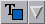

<!-- Documentation XQuad (c)1995-2000 AXENE contact axene@axene.org>
<html>

<head>
<title>Barre horizontale d'icônes 'Polices'</title>
</head>

<body BGCOLOR="#FFFFFF" BACKGROUND="Images/back.gif" TEXT="#000000">

<p ALIGN="right">  </p>

<p><br>
<br>
La barre d'icônes 'Manipulation des polices' permet de changer rapidement l'apparence des
caractères affichés dans les cellules de la feuille de calcul. Il est possible de
choisir la famille de la police de caractère, ses attributs (gras, italique, souligné,
etc.) ainsi que sa taille ou sa couleur. <br>
<br>
</p>

<hr>

<p align="center"><br>
 <br>
<small><i>Photo d'écran&nbsp;: Barre d'icônes Polices. </i></small></p>

<p><br>
</p>

<hr>

<p><br>
</p>

<h3>Première section de la barre d'icônes&nbsp;:</h3>

<ul>
  <li><a NAME="family_itemlist">la liste déroulante permet de <b>changer la famille de
    polices</b> pour toutes les cellules sélectionnées. Les éléments de cette liste
    proviennent de la partie concernant les polices de caractères du fichier de
    configuration. Les cellules sélectionnées, dont on veut changer la famille de polices,
    garderont leur taille et leurs attributs (gras / italique) si la nouvelle famille le
    permet. </a><br>
    &nbsp;</li>
  <li> <a NAME="font_colorlist">la liste des couleurs
    permet de <b>changer la couleur des textes</b> pour toutes les cellules sélectionnées. </a></li>
</ul>

<p><br>
</p>

<h3>Seconde section de la barre d'icônes&nbsp;:</h3>

<ul>
  <li> <a NAME="bold_icon">le premier bouton icône permet de <b>passer
    en gras</b> le contenu des cellules sélectionnées. Ce bouton est grisé si la famille de
    polices de la cellule active n'admet pas de police en gras. Ce bouton est enfoncé si la
    police de la cellule active est en gras, cliquer sur ce bouton enlèvera l'attribut
    'gras'. </a><br>
    &nbsp;</li>
  <li> <a NAME="italic_icon">le second bouton icône permet
    de <b>passer en <i>italique</i></b> le contenu des cellules sélectionnées. Ce bouton est
    grisé si la famille de polices de la cellule active n'admet pas de police en italique. Ce
    bouton est enfoncé si la police de la cellule active est en italique, cliquer sur ce
    bouton enlèvera l'attribut 'italique'. </a><br>
    &nbsp;</li>
  <li> <a NAME="underline_icon">le troisième bouton
    icône permet de <b><i>souligner</i></b> le contenu des cellules sélectionnées. Ce
    bouton est enfoncé si la police de la cellule active est soulignée, cliquer sur ce
    bouton enlèvera l'attribut 'souligné'. </a><br>
    &nbsp;</li>
  <li> <a NAME="stroke_icon">le quatrième bouton icône
    permet de <b><i>barrer</i></b> le contenu des cellules sélectionnées. Ce bouton est
    enfoncé si la police de la cellule active est barrée, cliquer sur ce bouton enlèvera
    l'attribut 'barré'. </a><br>
    &nbsp;</li>
  <li> <a NAME="shadow_icon">le cinquième bouton icône
    permet d'<b><i>ombrer</i></b> le contenu des cellules sélectionnées. Ce bouton est
    enfoncé si la police de la cellule active est ombrée, cliquer sur ce bouton enlèvera
    l'attribut 'ombré'. </a><br>
    &nbsp;</li>
  <li> <a NAME="smallcaps_icon">le sixième bouton icône
    permet de <b>passer en Petites majuscules</b> le contenu des cellules sélectionnées. Ce
    bouton est enfoncé si la police de la cellule active est en Petites Majuscules, cliquer
    sur ce bouton enlèvera l'attribut 'Petites Majuscules'. </a><br>
    &nbsp;</li>
  <li> <a NAME="bigcaps_icon">le septième bouton icône
    permet de <b>passer en Majuscules</b> le contenu des cellules sélectionnées. Ce bouton
    est enfoncé si la police de la cellule active est en Majuscules, cliquer sur ce bouton
    enlèvera l'attribut 'Majuscules'. </a></li>
</ul>

<p><br>
</p>

<h3>Troisième section de la barre d'icônes&nbsp;: </h3>

<ul>
  <li><a NAME="size_textfield">le champ texte permet de <b>choisir la taille des polices de
    caractères</b> de toutes les cellules sélectionnées. Le contenu de ce champ reflète la
    taille de la police de caractère de la cellule active. Choisir une nouvelle taille
    affecte toutes les cellules sélectionnées. La valeur de ce champ est comprise entre
    1(pt) et 1000(pt). L'unité par défaut est le point typographique. </a></li>
</ul>

<p><br>
</p>

<h3>Dernière section de la barre d'icônes&nbsp;: </h3>

<ul>
  <li> <a NAME="inc_size_icon">le premier bouton icône
    permet d'<b>augmenter la taille des polices</b> des cellules sélectionnées. La taille
    augmente selon des paliers de tailles prédéfinies. L'augmentation de la taille des
    polices n'est pas uniforme sur l'ensemble des cellules sélectionnées&nbsp;: la taille
    des polices des cellules augmente d'un palier. La taille d'une police ne peut excéder
    1000(pt). </a><br>
    &nbsp;</li>
  <li> <a NAME="dec_size_icon">le second bouton icône
    permet de <b>réduire la taille des polices</b> des cellules sélectionnées. La taille
    diminue selon des paliers de tailles prédéfinies. La réduction de la taille des polices
    n'est pas uniforme sur l'ensemble des cellules sélectionnées&nbsp;: la taille des
    polices des cellules diminue d'un palier. La taille d'une police ne peut descendre en
    dessous de 1(pt). </a></li>
</ul>

<p><br>
</p>

<hr>

<p ALIGN="right"></p>
</body>
</html>
